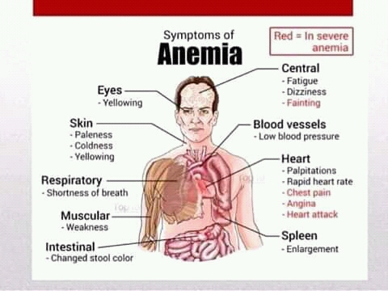

DEVELOPED BY ROBERT ZULU THE PROFESSIONAL PROGRAMMER
ANEMIA
Anemia is a condition that develop when your
blood lacks enough healthy red blood cells or
hemoglobin.
Hemoglobin is a main part of red blood cells
and binds oxygen. If you have too few or
abnormal red blood cells, or your hemoglobin is abnormal or
low, the cells in your body will not get enough oxygen.
Symptoms of anemia -- like fatigue -- occur because
organs aren't getting what they need to function property.
Your body makes three types of blood cells - white blood cells to fight infection, platelets to help your blood clot and red blood cells to carry oxygen throughout your body.
Red blood cells contain hemoglobin - an iron - rich protein that gives blood its red color. Hemoglobin enables red blood cells to carry oxygen from your lungs to all parts of your body and to carry carbon dioxide from other parts of the body to your lungs so that it can be exhaled.
Most blood cells, including red blood cells, are produced regularly in your bone marrow - a spongy material found within the cavities of many of your large bones. To produce hemoglobin and red blood cells, your body needs iron, vitamin B-12, folate and other nutrients from the foods you eat.
IMPORTANT FACTORS TO REMEMBER ARE:
Certain forms anemia are hereditary and infants may be affected
from the time of birth.
Women in the chidbearing years are particularly susceptible to iron-deficiency anemia because of the blood loss from menstruating and the increased blood supply demands during pregnancy.
Older adults also may have a greater risk of developing anemia because of poor diet and other medical conditions.
There are many types of anemia. All are very different in their causes and treatments. Iron-deficiency amemia, the most common type, is very treatable with diet changes and iron supplements. Some forms of anemia -- like the mild anemia that develops during pregnancy -- are even considered normal. However, some types of anemia may prevent lifelong health problems.
WHAT CAUSES ANEMIA?
There are more than 400 types of anemia, which are divided
into three groups:
1. Anemia caused by blood loss
2. Anemia caused by decreased or faulty red blood cell
production
3. Anemia caused by destruction of red blood cells
Anemia Caused by Blood Loss
Red blood cells can be lost through bleeding, which often can
occur slowly over a long period of time, and can go undecided.
This kind of chronic bleeding commonly results from the following:
Gastrointestinal conditions such as ulcers, hemorrhoids, gastritis
(inflammation of the stomach) and cancer
Menstruation, especially if menstrual bleeding is excessive
Anemia Caused by Decreased or Faulty Red Blood Cell Production
With this type of anemia, the body cells may not function correctly.
In either case, anemia can result. Red blood cells may be fault
or decreased due to abnormal red blood cells or a lack of minerals
and vitamins needed form red blood cells to work property. Conditions
associated with these causes of anemia include the following:
Sickle cell anemia
Iron-deficiency anemia
Vitamin deficiency
Bone marrow and stem cell problems
SICKLE CELL ANEMIA.
This inherited disorder and sometimes serious condition is
an inherited hemolytic anemia. It caused by a defective form
of hemoglobin that forces red blood cells to assume an abnormal
crescent (sickle) shaped because of a genetic defect. These irregular blood cells die prematurely,
resulting in a chronic shortage of red blood cells.
They break down rapidly, so oxygen does not get to the body's
organs, causing anemia. The crescent-shaped red blood cells can
also get stuck in tiny blood vessels causing pain.
IRON DEFICIENCY ANEMIA.
This is the most common type of anemia worldwide. Iron deficiency anemia is
caused by a shortage of iron in your body. Your bone marrow
in the center of the bone needs
iron to make hemoglobin.
Hemoglobin, the pat of the red blood cell that transports
oxygen to the body's organs. Without adequate iron, your body can't
produce enough hemoglobin for red blood cells.
The result is iron-deficiency anemia.This type of anemia can caused by:
An iron-poor diet, especially in infants, children, teens, vegans,
and vegetarians.
Menstruation, Frequent blood donation, Certain drugs, foods,
caffeinated drinks.
Digestive conditions such as crohn's disease or surgical
romoval of part the stomach or small intestine.
Without iron supplementation, this type of anemia occurs in many
pregnant women. It is also caused by blood loss, such as from
heavy menstrual bleeding, an ulcer, cancer and regular use of
some over-the-counter pain relievers,especially aspirin.
VITAMIN DEFICIENCY ANEMIA.
In addition to iron, your body needs folate and vitamin B-12 to
produce enough healthy red blood cells. A diet lacking in
these and other key nutrients can cause decreased red blood
cell production.
Additionally, some people may consume enough B-12, but their bodies
aren't able to process the vitamin. This can lead to vitamin
deficiency anemia, also know as pernicious anemia.
Condition leading to anemia caused by vitamin dificiency include:
Megaloblastic anemia: Vitamin B12 or folate or
both are defficient
Pernicious anemia: Poor vitamin B12 absorption
Dietary deficiency: Eating little or no meat
may cause a lack of vitamin B12, while overcooking or eating
toofew vegetables may cause a folate deficiency .
Other causes of vitamin deficiency: pregnancy,
certain medications, alcohol abuse, intestinal disease
such as tropical sprue and celiac disease.
During early pregnancy, suffering folic acid
can help prevent the fetus from developing
neural tube defects such as spina bifida
BONE MARROW AND STEM CELL PROBLEMS
Prevent the body from producing enough red blood cells. Some of
the stem cells found in bone marrow develop
into red blood cells. If stem cells are too few,
defensive, or replaced by other cells such as metastatic cancer cells.
ANEMIA ASSOCIATED WITH BONE MARROW DISEASE
A variety of disease, such as leukemia andmyelofibrosis, can cause
anemia by affecting blood production in your bone marrow.
The effects of these type of cancer and cancer-like disorders
vary from mild to life-threatening.
APLASTIC ANEMIA.
This rare life-thereatening anemia occurs when your body doesn't
produce enough red blood cells. Causes of aplastic anemia include
infections, certain medicines, autoimmune disease and exposure to
toxic chemicals.
ANEMIA OF CHRONIC DISEASE Certain disease - such as Cancer, HIV/AIDS, Rheumatoid arthritis, Kidney disease, Crohn's disease and other chronic Inflammation diseases - can interfere with the production of red blood cells.
Hemolytic anemias.
This group of anemias develops when red blood cells are develops
when red blood cells are detroyed faster than bone marrow can
replace them. Certain blood diseases increase red blood cell destruction.
You can inherit a hemolytic anemia, or you can develop it later
in life.
SYMPTOMS OF ANEMIA
SYMPTOMS
Anemia signs and symptoms vary depending on the cause of your anemia.
They may include:
Fatigue, Weakness, Pale or yellowish skin, Irregular heartbeat,
Shortness of breath, Dizziness or lightheadedness,
Chest pain, Headache, Cold hands and Feet
PREVENTION
Eat a vitamin
Many types of anemia can't be prevented. But iron deficiency
anemias and can be avoided by having a diet that includes a
variety of vitamins and nutrients, including:
Iron. Iron-rich foods include beef and other meats, beans, lentils, iron-fortified cereals, dark green leafy vegetables, and dried fruit.
Folate. This nutrient, and its synthetic form folic acid, can be found in fruits and fruit juices, dark green, leafy vegetables, green peas, Kidney beans, peanuts, and enriched grain products, such as bread, cereal pasta and rice.
Vitamin B-12. foods rich in vitamin B-12 include meat, dairy products, and fortified cereal and soy products
Vitamin C. Food rich in vitamin c include citrus fruits and juices, peppers, broccoli, tomatoes, melons strawberry. This items help increase iron absorption.